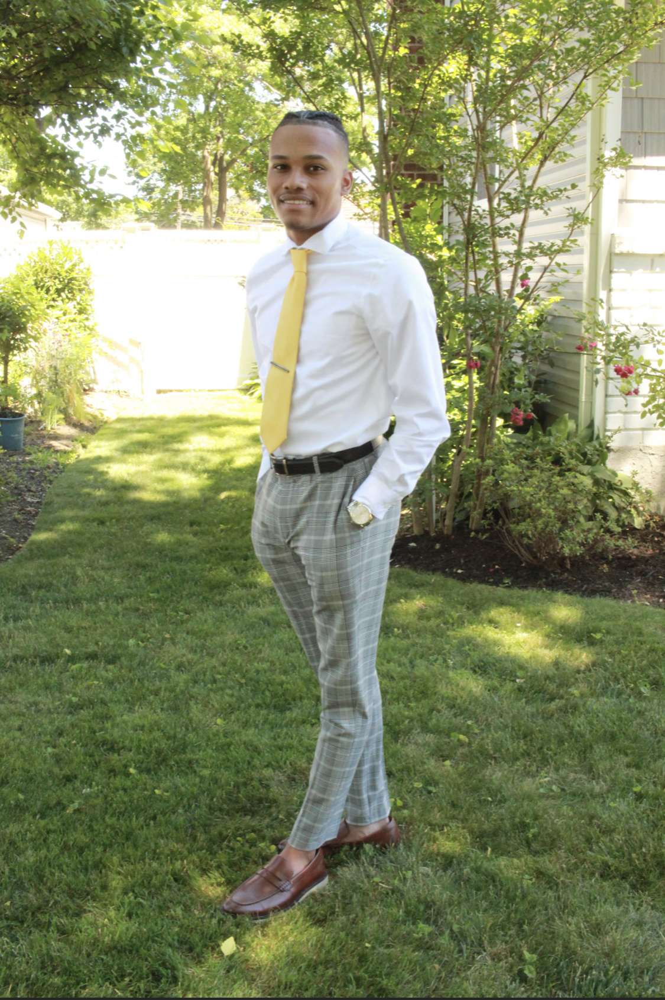

About Me
I am a Senior at SUNY Farmingdale with hand's on experience supporting IT operations, systems configuration, and technical troubleshooting. Passionate about problem-solving and technology, with a strong foundation in Java, Python, C++, Linux, networking fundamentals, and cybersecurity principles. Experienced in application support, data documentation, and maintaining system reliability in fast-paced, regulated environments.
